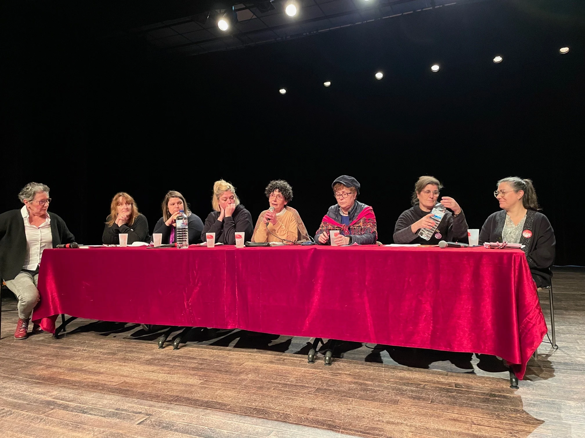
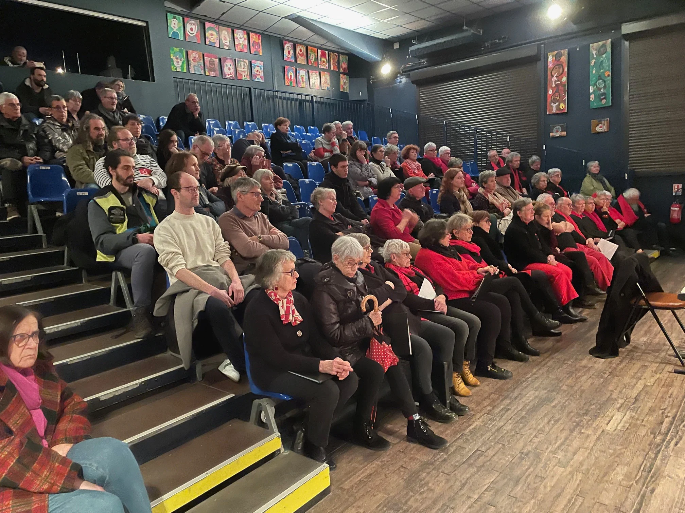
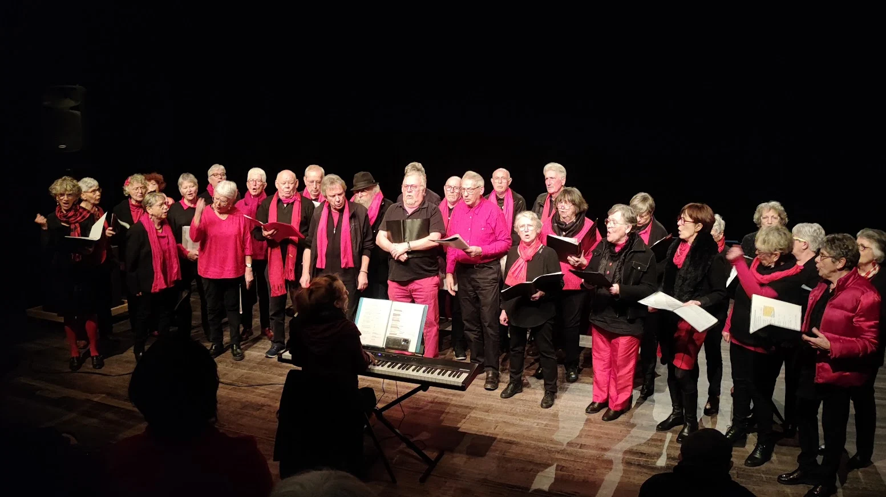
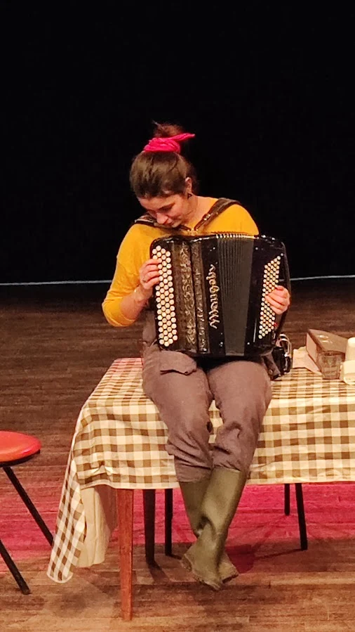
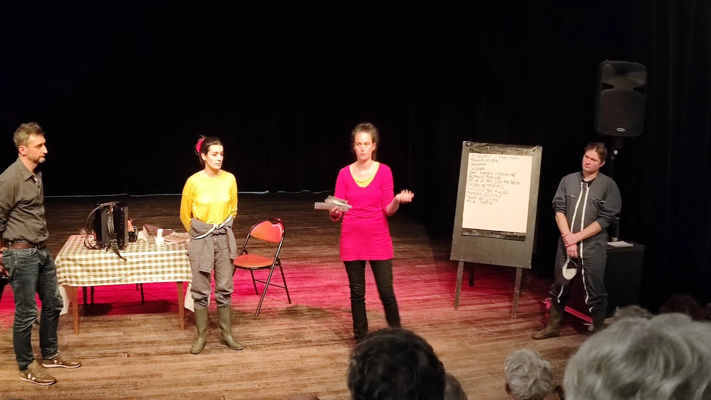

Compte rendu fédéral
À Niort, retour sur notre soirée du 8 mars pour les droits des femmes
Date indiquée par Facebook · 11 mars 2024
Repères éditoriaux
Nous avons réuni débat, musique et théâtre autour des luttes et des droits des femmes, ici et ailleurs. Le compte rendu et les cinq photographies reviennent sur cette soirée au Patronage laïque.
Texte conservé avec la publication
8 Mars - Journée internationale de lutte pour les droits des femmes !
Retour sur la soirée culturelle et débat organisée par le PCF79
Cette journée trouve son origine dans les luttes féministes du début du XXème siècle, portée notamment par les femmes socialistes, avec en tête de proue Clara Zetkin (militante communiste allemande), pour la conquête de nouveaux droits pour les femmes. Conquête du droit de vote, de l’indépendance sociale des femmes … Trop souvent considérée à tort comme la journée de la femme, il s'agit bien de célébrer la journée internationale de lutte pour les droits des femmes.
C'est pourquoi la Fédération du PCF79 avait choisi comme thème du débat de cette soirée « Luttes et droits des femmes ici et ailleurs », avec la participation de Berivan Firat, porte-parole du Conseil Démocratique Kurde et du mouvement des femmes kurdes en France, de Leila Moussavian, Franco-Iranienne, membre du Conseil national du PCF et de la Commission Internationale du PCF, de Catherine Giraud, membre du Bureau Confédéral de la CGT, de trois militantes du collectif « Nous Toutes 79 » et de Sandrine Fournier militante de la Fédération Santé de la CGT et de l’Union Départementale de la CGT 79.
En début ainsi qu’en clôture de ce débat, la chorale niortaise " Y'en a marre " a interprété plusieurs magnifiques chansons de son répertoire en lien avec le 8 mars et la lutte pour le droit des femmes.
Durant le débat, il a été question de l'international et des luttes des femmes. Du rôle crucial du peuple Kurde et notamment des unités de femmes combattantes dans la lutte contre Daesh en Syrie et en Irak ; de la lutte des femmes en Iran et du slogan « Femme, Vie, Liberté », qui va bien au-delà de la seule question du port du voile, mais que l’opposition de droite iranienne aimerait bien limiter à cela.
Bien sûr, il a été discuté de l’entrée de l’Interruption Volontaire de Grossesse dans la constitution française, obtenue par la lutte engagée depuis des décennies en France par les militantes féministes, notamment par Laurence COHEN et Éliane ASSASSI, sénatrices communistes, qui avaient déposé un 1er texte dès 2017, jamais inscrit à l’ordre du jour. Et, de souligner le symbole fort envoyé au-delà des frontières par cette constitutionnalisation, quand les réactionnaires de tous ordres, de l'Argentine à la Pologne en passant par la Hongrie et les États-Unis, sous le poids des conservatismes politico-religieux relayés par la droite et l'extrême-droite reculent sur cette question. Si la liberté d'avorter est inscrite à présent dans la constitution, il faut maintenant en faire un vrai droit, alors que son effectivité reste menacée avec près de 130 centres d'IVG fermés en quinze ans. Il y a aussi les violences faites aux femmes avec déjà 31 féminicides depuis le début de cette année !
Les militantes féministes savent qu'il faut mener la lutte en continu. Il a été aussi question des inégalités avec les rapports de pouvoir à tous les niveaux de la société, jusqu'au choix des carrières et les conséquences sur les rémunérations ou les horaires selon le travail. Dans le monde, plus de la moitié des pays n'envisagent même pas d'établir l'égalité salariale.
Cette discussion de près de deux heures fut très intéressante comme l'ont souligné des participant.e.s. Gisèle Halimi disait : « Les acquis des femmes sont toujours précaires et fragiles ». C'est bien pourquoi la journée des droits de la femme ne doit pas s'arrêter au 8 mars, mais être un combat quotidien. Et comme l'a dit une des intervenantes à la tribune, « il n'y aura pas de liberté pour les femmes s'il n'y en a pas pour tout le monde et si le capitalisme est toujours présent ». L'égalité reste à conquérir pour les femmes de France comme du monde entier !
L'association "La Graine Solidaire " a ensuite permis à tout un chacun de se restaurer en poursuivant la discussion à bâtons rompus.
Puis pour terminer cette soirée, la scène était ouverte à une séance de théâtre forum jouée avec talent par 4 comédien.nes de la compagnie "La D'âme de Compagnie" intitulée « Elle a pourtant les pieds sur terre ». Le théâtre forum joue des scènes de la vie quotidienne, personnelle, familiale et professionnelle sur la thématique choisie, sur lesquelles le public est invité à interagir. En l’occurrence, le thème était « les rôles des femmes dans l'agriculture sont-ils prédéterminés ? ». Scènes sexistes ou pas, au public de dire et de réagir. Inutile de dire que ça a beaucoup réagi ! Cette forme de théâtre interactive, mise au point par Augusto Boal, homme de théâtre brésilien, est un excellent outil pour aider à la réflexion et rechercher collectivement des solutions.
Le combat, les combats pour les droits des femmes sont ceux de toutes et tous.





Sources
Archive rouge · export Facebook · AR-0002-FB-01452
À lire aussi · 8 mars. Notre communiqué pour les droits des femmes et le programme de Niort